CON EL FIN DE LOGRAR LA MÁS ALTA CALIDAD EN EL SERVICIO, ESTE AÑO CONTINUAMOS CON CAPACITACIÓN Y ACTUALIZACIÓN DE NUESTRO PERSONAL, TANTO EN ÁREAS ACADÉMICAS COMO DE FORMACIÓN HUMANA
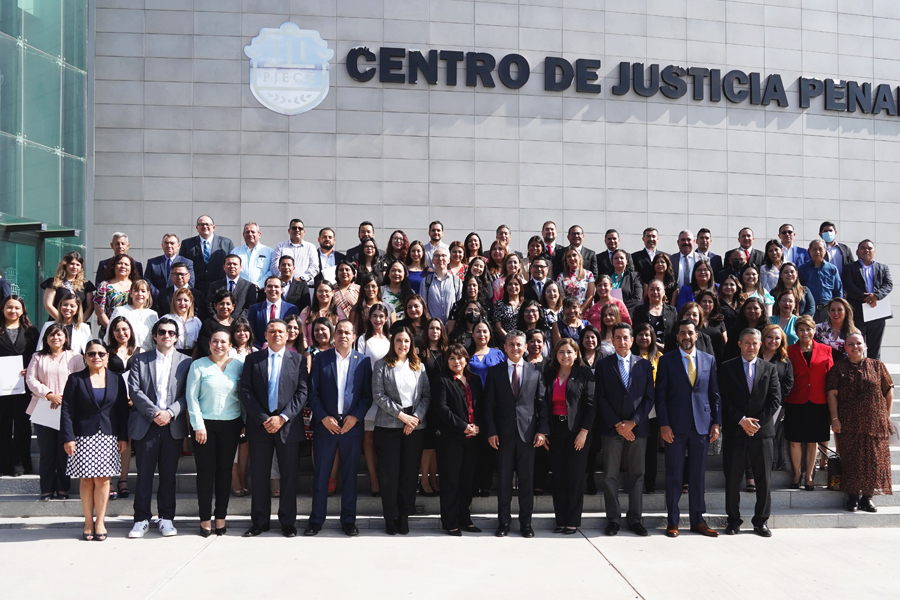
Para ser considerados profesionales, las personas al servicio de la administración de justicia debemos demostrar no solo conocimientos técnicos y jurídicos en las diversas materias del derecho, sino también las habilidades que nos califican para ejercer nuestros cargos y la capacidad de conducirnos en todo momento con ética, responsabilidad, sentido de honestidad, imparcialidad y bajo los valores institucionales que distinguen al Poder Judicial.
Para lograr lo anterior, año con año nos enfocamos en realizar diversas capacitaciones y actualizaciones tanto académicas como de formación humana a fin de garantizar que quienes laboramos al interior de los diversos órganos del Poder Judicial, lo hagamos con la más alta calidad en el servicio, además de fortalecer los mecanismos institucionales para el constante desarrollo de capital humano.
En este apartado damos a conocer las principales actividades desarrolladas por el Instituto de Especialización Judicial, que de acuerdo a la Ley Orgánica del Poder Judicial del Estado de Coahuila de Zaragoza, es el órgano rector de la profesionalización en la administración de justicia y quien se encarga de realizar los planes y programas académicos, talleres, cursos, coloquios, conferencias, seminarios y estudios superiores de posgrado tanto al interior como al exterior del Poder Judicial. Este año destacamos la realización del procedimiento de exámenes de méritos en materia laboral que nos permitió seleccionar al personal de los Tribunales Laborales en base a sus conocimientos, habilidades, destrezas y el perfil profesional idóneo para desempeñarse en esos cargos.
Además, con apoyo del Instituto Estatal de Defensoría Pública, del Centro de Evaluación Psicosocial, Centro de Medios Alternos de Solución de Controversias, la Unidad de Derechos Humanos e Igualdad de Género, órganos que cuentan con personal calificado en cada una de sus áreas, ofertamos una serie de cursos y capacitaciones que abonan en beneficio de la prestación de nuestros servicios y así contar con personal adecuado en cada una de las áreas en las que damos atención a la ciudadanía.
INSTITUTO DE ESPECIALIZACIÓN JUDICIAL
Los avances y la transformación jurídica y tecnológica que prevalecen en nuestra época, exigen la actualización continua de los conocimientos, habilidades y aptitudes de quienes tienen a su cargo la operación y funcionamiento de los órganos encargados de administrar justicia. Así, la capacitación permanente y sistemática de los funcionarios adscritos al Poder Judicial del Estado es una de las labores fundamentales en las que se sustenta nuestro objetivo de mantener vigente el nivel en la calidad e integridad de la impartición de justicia que requiere la sociedad coahuilense.
Durante el 2022 mantuvimos los esfuerzos institucionales bajo el enfoque de profesionalización y fortalecimiento en la capacitación de las personas encargadas de operar los sistemas de justicia en nuestro estado. En ese sentido, la calidad de los cursos que impartimos, la excelencia de los docentes y el uso de las tecnologías de la información, fueron herramientas claves que nos permitieron consolidarnos en este ámbito tan importante que sostiene al Modelo de Justicia de Coahuila.
De manera específica, a través del Instituto de Especialización Judicial, en estrecha colaboración con diversas instancias, trazamos tres líneas de trabajo para implementar la capacitación y desarrollo de habilidades:
- Exámenes de méritos en materia laboral.
- Oferta académica especializada y continua.
- Desarrollo institucional.
EXÁMENES DE MÉRITOS EN MATERIA LABORAL
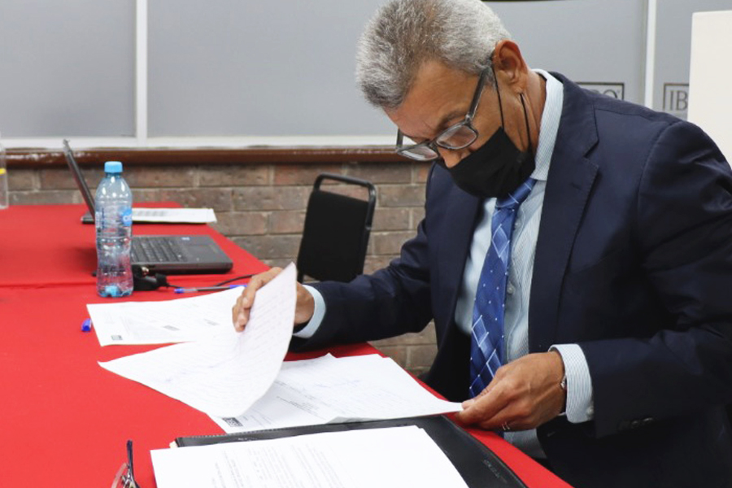
En el marco de la implementación de la Reforma Laboral y puesta en marcha de los nuevos tribunales en esta materia y con el propósito de garantizar que las personas encargadas de la operación de este nuevo sistema de justicia en Coahuila cuenten con los conocimientos, habilidades, destrezas y el perfil profesional idóneo, el 30 de junio de 2022 emitimos la convocatoria para la aplicación de los exámenes de méritos y la selección del personal encargado de desempeñar los cargos de jueces, secretarios y notificadores en los seis Tribunales Laborales, en un trabajo coordinado entre el Consejo de la Judicatura, la Secretaría Técnica y de Transparencia, el Instituto de Especialización Judicial, así como con la Oficialía Mayor, de conformidad con lo establecido por el Reglamento para el Examen de Méritos del Poder Judicial del Estado de Coahuila de Zaragoza.
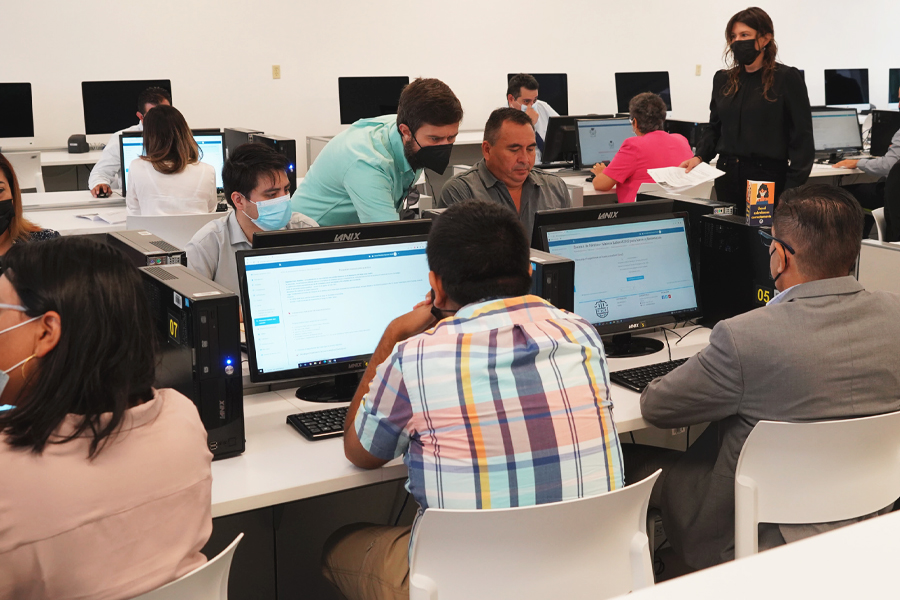
Cabe mencionar que durante este proceso, fortalecimos el funcionamiento del Instituto de Especialización Judicial con la conformación del Consejo Académico, cuyos integrantes destacan por su amplia experiencia y compromiso con la administración de justicia, entre ellos se encuentran el Magistrado Presidente del Tribunal Superior de Justicia, Miguel Felipe Mery Ayup, el Magistrado Presidente de la Sala Regional, Carlos de Lara McGrath, las Magistradas Presidentas de las Salas Colegiadas Penal y Civil y Familiar, María Luisa Valencia García y María Eugenia Galindo Hernández, respectivamente, además de los Jueces de Primera Instancia: Gricelda Elizalde Castellanos, Lourdes Espinoza Cubillo y Martín González Domínguez.
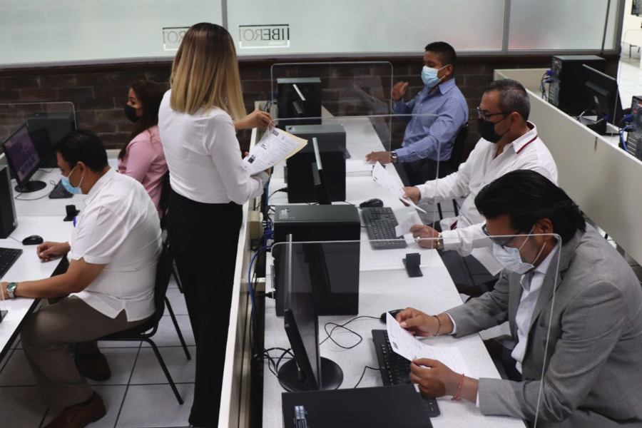
Por su amplia trayectoria también participaron dentro de este Consejo Académico el Rector de la Universidad Autónoma de Coahuila, Jesús Salvador Hernández Vélez; el Rector de Universidad Iberoamericana Campus Torreón, Juan Luis Hernández Avendaño; el Licenciado Miguel Wong Sánchez Ibarra, quien funge como integrante del Observatorio Judicial así como la Maestra Marcela Castañeda Agüero, Directora del Instituto de Especialización Judicial. Todos ellos participaron en el diseño y estructuración de la metodología para la aplicación efectiva y transparente de los exámenes en mención.
Dimos inicio con la recepción de 215 solicitudes de inscripción de las cuales se admitieron a 116 personas que cumplieron con los requisitos establecidos por el Consejo de la Judicatura. De éstas, 48 personas aspirantes para los cargos de juez laboral, 29 para secretarios y 39 para notificadores. De manera posterior, se dio paso a las tres diversas fases de las evaluaciones: la primera de ellas referente a los conocimientos en la ciencia del derecho y en el nuevo sistema de justicia laboral, luego la concerniente a la valoración de aptitudes y por último la evaluación de méritos.
Dentro de esta primera fase, se calificó el grado de conocimiento y capacidad técnico-jurídico de las y los aspirantes a través de un examen escrito con el apoyo institucional de la Universidad Iberoamericana en Torreón en su aplicación, formulación de reactivos y evaluación correspondiente. Se estableció que aquellas personas que aprobaran con una calificación superior a los 85 puntos, en una escala de 0 a 100, avanzarían a la etapa de resolución de un caso práctico de acuerdo a las funciones del cargo al que cada uno de ellos aspirara. En ese sentido, un total de 44 personas avanzaron en esta etapa en los diversos cargos jurisdiccionales. Contamos con el apoyo de la Universidad Autónoma de Coahuila que nos facilitó sus instalaciones dentro del Centro de Cómputo de la Infoteca, Campus Arteaga, para que las y los sustentantes acudieran para realizar esta segunda etapa del examen.
De conformidad con la convocatoria, quienes aprobaron el caso práctico, tuvieron acceso a la fase de examen oral, estas dos etapas fueron evaluadas por tres comisiones designadas por el Consejo de la Judicatura, quienes fueron propuestos por el Consejo Académico e integradas por académicos, barras de abogados y funcionarios del Poder Judicial, quienes tuvieron el objetivo de asegurar los principios de excelencia, objetividad, imparcialidad, profesionalismo e independencia.
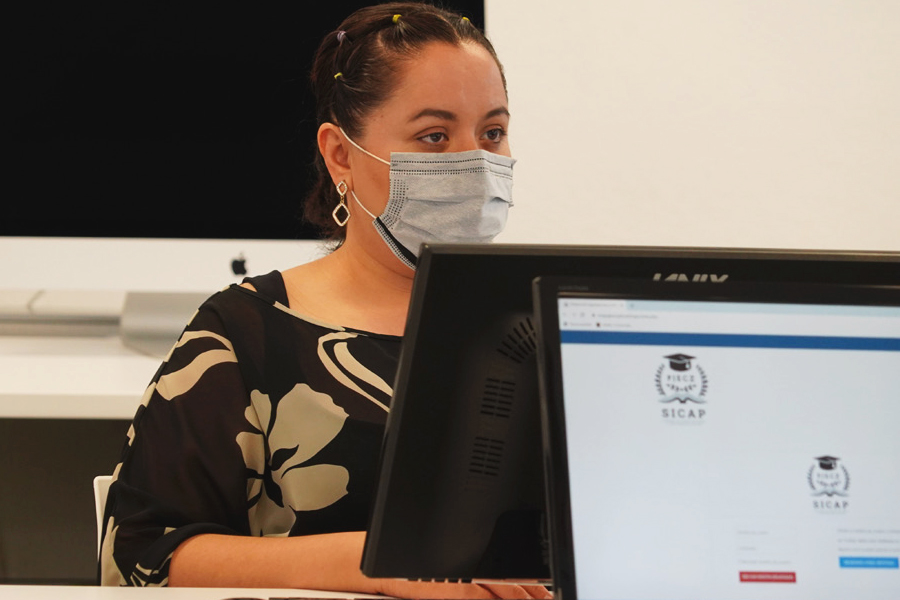
En cuanto a la siguiente fase, fue realizada a través de la plataforma digital Armstrong y comprendió una evaluación de aptitudes, actitudes, capacidades y competencias psicológicas y vocacionales de las y los aspirantes para desempeñar un cargo judicial. Finalmente la evaluación de méritos estuvo a cargo del Consejo de la Judicatura a través del análisis de la formación académica y trayectoria profesional de quienes aprobaron las fases previas de las convocatorias, obteniendo como resultado la selección imparcial y objetiva de 13 juezas y jueces, cinco secretarias y secretarios, así como diez notificadoras y notificadores.
Durante el desarrollo de todas las etapas del examen de méritos, trabajamos de manera coordinada con la Dirección de Innovación de la Oficialía Mayor con la finalidad de hacer uso de todas las herramientas tecnológicas que abonaron en gran medida en el resultado satisfactorio de este ejercicio.
Es así que con este modelo de evaluación se materializa la visión de una justicia profesional, garante de la transparencia que debe permear en la selección de nuestro personal jurisdiccional, dando espacio a mujeres y hombres que cuentan con el conocimiento jurídico, las habilidades, destrezas y formación humana que la sociedad requiere.
OFERTA ACADÉMICA ESPECIALIZADA Y CONTINUA
Respecto al número de actividades de capacitación, durante 2022, llevamos a cabo 42 actividades académicas a través de nuestras instancias especializadas y en las cuales contamos con la participación de mil 974 personas. En concordancia con lo que desde el año 2020 se ha adoptado a través de este Modelo de Justicia, que hace de la tecnología y la innovación herramientas claves para la mejora en el acceso a la justicia, durante este año continuamos con la modalidad en línea para el desarrollo de nuestras capacitaciones y actualizaciones ofrecidas a través del Instituto de Especialización Judicial. Del total de personas capacitadas, mil 29 pertenecen al Poder Judicial, 373 a otras dependencias gubernamentales y 572 a abogados postulantes.
Un desafío fundamental en la implementación del nuevo Sistema de Justicia Laboral es la formación del capital humano que desde el 2022 está a cargo de esta materia, tarea en la que nos empeñamos desde años anteriores. En esta labor de formación, previo al proceso de exámenes de méritos, concretamos la impartición del Diplomado sobre la Reforma en Materia de Justicia Laboral, cuyo objetivo fue proporcionar a las y los participantes los conocimientos, habilidades y competencias profesionales indispensables para su desempeño idóneo como operadores jurídicos en materia laboral. En esta actividad participaron un total de 429 personas pertenecientes a todo el estado, entre servidores públicos de los tres poderes, así como abogadas y abogados litigantes de foros y barras, y a las y los ciudadanos interesados en actualizarse en esta materia. Este importante diplomado tuvo una duración de 90 horas desarrolladas en 30 sesiones, impartidas por docentes del más alto perfil, destacando Magistrados, Jueces de los estados de Nuevo León, Guanajuato, Querétaro, Durango, académicos y especialistas en justicia laboral. La acreditación de este diplomado fue uno de los requisitos a cumplir a fin de participar en el procedimiento de examen de méritos mencionado anteriormente.
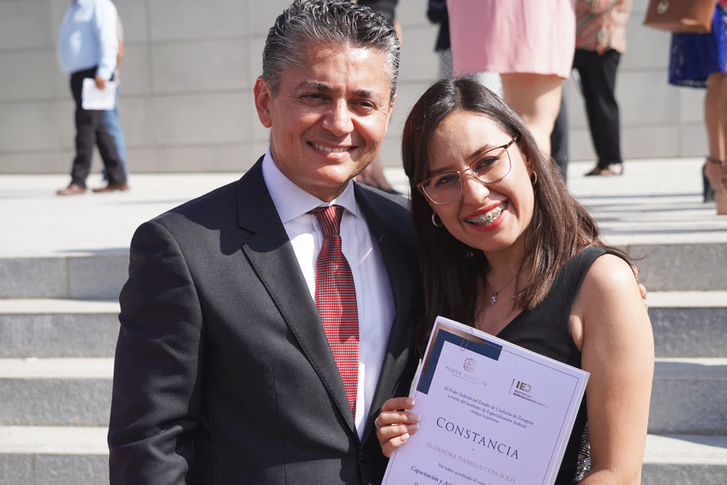
En concordancia con lo anterior, implementamos un programa académico en el que participaron 28 funcionarios adscritos a los recién creados Tribunales Laborales, buscando su óptimo desempeño profesional, en los cuales se abordaron los temas de aspectos sustantivos y procesales de la función del notificador y del secretario, en materia de derechos humanos, perspectiva de género en el ámbito laboral, transparencia, protección de datos personales, gestión documental, técnicas de interpretación, argumentación jurídica, ética y responsabilidad administrativa, entre otros. También en coordinación con la Casa de la Cultura Jurídica de la Suprema Corte de Justicia de la Nación con sede en Saltillo impartimos el seminario El Nuevo Modelo de Justicia Laboral, participando en esta actividad 13 funcionarios.
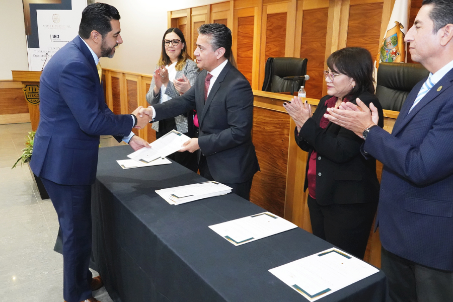
En el tema relacionado a la carrera judicial, durante los meses de marzo a junio del 2022, un total de 216 secretarias y secretarios adscritos a diversos órganos jurisdiccionales, participaron en el programa de capacitación integral, el cual tuvo una duración de 60 horas en el que se impartieron temas de gestión judicial, redacción jurídica, herramientas tecnológicas, derechos humano y perspectiva de género, ética y responsabilidades administrativas, argumentación jurídica, transparencia y protección de datos, amparo y temas especializados por cada materia. Para obtener su constancia correspondiente, los participantes respondieron al examen de conocimientos utilizando la Plataforma del Sistema de Capacitaciones y Profesionalización (SICAP).
Asimismo, 20 funcionarios del Tribunal de Conciliación y Arbitraje participaron en el curso de capacitación del Sistema de Administración de Justicia Inteligente (SAJI), el cual comprendió temas de gestión de información, notificaciones, registro de valores, libros electrónicos, listas de acuerdos, sentencias públicas, entre otros temas. Con acciones como estas coadyuvamos para que las y los participantes fortalezcan sus conocimientos y habilidades para convertir su ejercicio profesional en uno más dinámico, que abone al mejoramiento de la actividad jurisdiccional.
Por otro lado, con el objetivo de implementar mejores prácticas en los procesos familiares, llevamos a cabo un conversatorio con la participación de 36 personas, entre jueces de esta materia y personal adscrito al Centro de Evaluación Psicosocial, en el que se expusieron y analizaron temas de gran relevancia para el intercambio de experiencias a favor del adelanto en las labores jurisdiccionales en este ámbito.
Destacamos también que durante este año participamos, con el apoyo del personal experto del Centro de Evaluación Psicosocial, en diversas capacitaciones relativas a temas como interferencias parentales, peritaje social, violencia en el noviazgo y la función preventiva del docente, a personal del propio Poder Judicial así como de diversas instancias académicas.
Con la finalidad de contribuir al fortalecimiento de los mecanismos de coordinación entre autoridades responsables de la implementación y seguimiento a las órdenes de protección, específicamente en el contexto de la crisis sanitaria, social y económica, acompañados por EQUIS Justicia para las Mujeres, participamos en el curso Órdenes de Protección: Una herramienta crucial para garantizar el derecho de mujeres y niñas a vivir una vida libre de violencia en el contexto de COVID-19 en México, con el apoyo de la Cooperación Alemana para el Desarrollo (GIZ).
Este curso tuvo una duración de diez meses y participaron las y los jueces de los Juzgados Especializados en Violencia Familiar contra la Mujer y personal de la Secretaría Técnica y de Transparencia, fortaleciéndose con mayor conocimiento y habilidades para conocer el alcance e impacto que las órdenes de protección tienen en la vida de mujeres, niñas y niños víctimas de violencia.
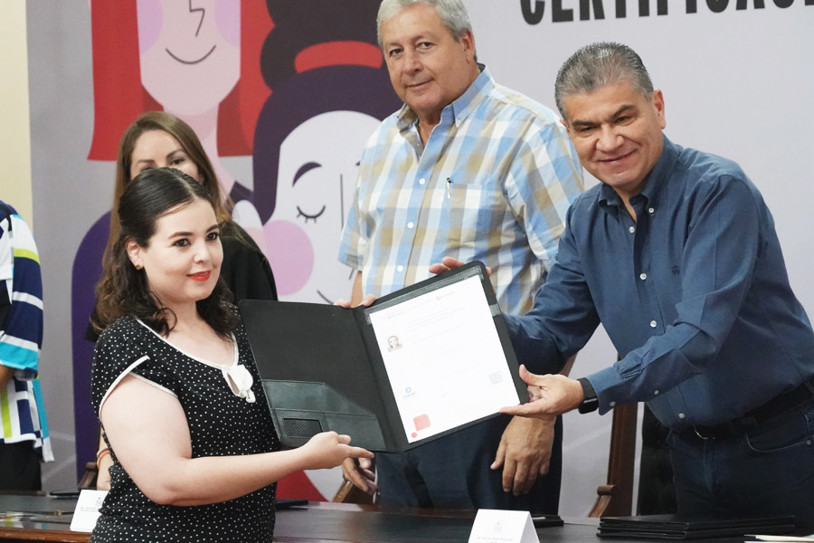
Como cada año, en atención a las alianzas estratégicas que se concretan de manera efectiva entre el Poder Judicial y otras instancias públicas y privadas, y en aras de fortalecer la función jurisdiccional, en 2022 efectuamos acciones derivadas de diversos convenios de colaboración. Entre ellos, destacamos el celebrado entre el Gobierno del Estado de Coahuila de Zaragoza, el Congreso del Estado, la Auditoría Superior del Estado, así como la Facultad de Contaduría y Administración en la Unidad Torreón de la Universidad Autónoma de Coahuila, que nos permitió introducir la Licenciatura en Derecho en la modalidad en línea, con la valiosa participación de personal jurisdiccional de este Poder Judicial en el 90 por ciento de la plantilla de docentes. Esta importante actividad especializada beneficia a 203 personas que al día de hoy forman parte de la primera y segunda generación que cursa su educación profesional en la ciencia jurídica.
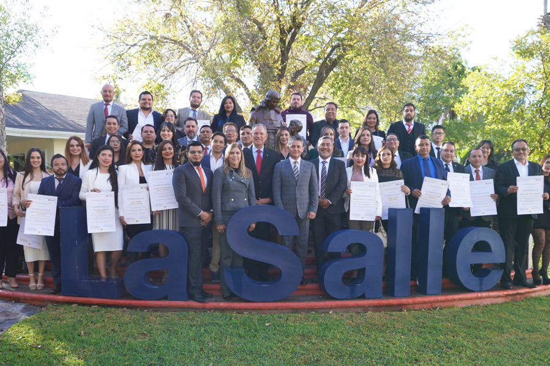
En concordancia con lo anterior, derivado de la colaboración con la Secretaría de Seguridad Pública del Estado, la Fiscalía General del Estado, la Subsecretaría de Prevención y Participación Ciudadana de la Secretaría de Gobierno, continuamos con la actualización de los elementos de las corporaciones policiales mediante el curso de Actuación Policial, Justicia Cívica y Proximidad Social con Perspectiva de Género, diseñado a través de la plataforma SICAP en modalidad 100 por ciento en línea con un programa académico de 13 módulos y 52 horas de estudio a través de videos, exámenes y actividades prácticas. El curso es avalado por la Universidad La Salle Campus Saltillo y contamos con la participación de 50 integrantes de las corporaciones policiales.
Sin duda, el trabajo efectuado este año con la Suprema Corte de Justicia de la Nación (SCJN) a través del Centro de Estudios Constitucionales, la Red de Escuelas Judiciales, la Comisión Nacional de Tribunales Superiores de Justicia de los Estados Unidos Mexicanos (CONATRIB), la Universidad La Salle, nos posibilitó ofertar un amplio catálogo de capacitaciones en las diversas ramas de Derechos Humanos con los temas de Protocolo para juzgar con perspectiva de infancia y adolescencia, Protocolo para juzgar con perspectiva de discapacidad, Protocolo para juzgar con perspectiva de orientación sexual, identidad y expresión de género y características sexuales y la igualdad de género en el acceso a la justicia, cero discriminación, rompiendo prejuicios, en donde participaron activamente 96 personas; en materia penal se impartieron los cursos de Prevención, Investigación y sanción de la tortura: Obligaciones y facultades del órgano jurisdiccional en colaboración con la organización Documenta A.C., el Seminario de pruebas en el Juicio Oral, así como el Diplomado en el Sistema Integral de Justicia Penal para Adolescentes, fortaleciéndose con estas actividades académicas a 75 personas.
Asimismo 52 funcionarios judiciales participaron en actividades como el Taller Regional de Actualización en los Sistemas de Consulta del Semanario Judicial de la Federación, el Programa Nacional de Fortalecimiento Interinstitucional en Procuración de Justicia en materia anticorrupción; la décima primera Reunión de la Red de Escuelas Judiciales de los Estados de la República Mexicana, así como el curso Impacto de la Reforma Judicial en el Sistema de Precedentes de los Poderes Judiciales Locales.
Además, continuamos con la difusión de la cultura jurídica y una de las estrategias para hacer factible este acercamiento entre el Poder Judicial y sus diversos órganos con los ciudadanos en general, es a través de la visitas guiadas como medios de difusión cultural para orientar y facilitar a los estudiantes, la ubicación y atribuciones de las diversas instancias y dependencias que integran el Poder Judicial del Estado de Coahuila. Este año concretamos estas actividades en donde participaron 34 estudiantes.
DESARROLLO INSTITUCIONAL
El 15 de julio se publicó en el Periódico Oficial del Gobierno del Estado el decreto emitido por el Congreso del Estado en el que se reforma el artículo 141 de la Ley Orgánica del Poder Judicial del Estado de Coahuila de Zaragoza. Esta modificación reconoce legalmente al Instituto de Especialización Judicial como el órgano rector de la profesionalización en la administración de justicia con el objetivo de generar líneas de investigación, realizar publicaciones académicas, capacitar, formar, actualizar, evaluar y certificar al personal de este poder, a quienes deseen ingresar a la carrera judicial o ser ascendidos y al público en general, a través de la implementación de diplomados, talleres, cursos, coloquios, conferencias, seminarios y estudios superiores de posgrado.
Es así que nuestro instituto ya se encuentra facultado para llevar a cabo los diseños curriculares, planes y programas académicos de estudios de nivel posgrado, especialización y educación continua, de acuerdo con los lineamientos establecidos por las leyes de la materia. Este reconocimiento sin duda fortalece al Modelo de Justicia implementado en nuestro estado y nos permite sentar las bases de coordinación con las autoridades educativas, para lograr una oferta académica de nivel posgrado con el debido reconocimiento oficial y valor curricular, tanto al interior de nuestros órganos como al resto de la comunidad jurídica en Coahuila, a fin de obtener posicionamiento y proyección profesional en favor de las y los operadores del sistema de justicia.
Este año continuamos con la capacitación sobre el sistema informático con el que se llevará el control de documentos en el Sistema Integral de Calidad y Gestión Documental, como parte del programa de la certificación ISO 9001 y 30301, en ese rubro 25 funcionarios judiciales recibieron capacitación.
Tabla 31. Personas capacitadas por el Instituto de Especialización Judicial, 2022.
| MATERIA | ACTIVIDADES | PJEC | OTRAS DEPEND. | LITIGANTES | TOTAL |
|---|---|---|---|---|---|
| Familiar | 1 | 36 | 0 | 0 | 36 |
| Penal | 4 | 29 | 0 | 46 | 75 |
| DDHH y Género | 8 | 96 | 0 | 0 | 96 |
| Capacitación Básica | 12 | 85 | 20 | 17 | 122 |
| MASC | 8 | 354 | 80 | 37 | 471 |
| Especializada y Carrera Judicial | 5 | 286 | 50 | 153 | 489 |
| Laboral | 3 | 110 | 223 | 137 | 470 |
| Exámenes de Mérito | 1 | 33 | 0 | 182 | 215 |
| TOTAL | 42 | 1029 | 373 | 572 | 1974 |
Fuente: Instituto de Especialización Judicial del Poder Judicial del Estado de Coahuila de Zaragoza. 2022.
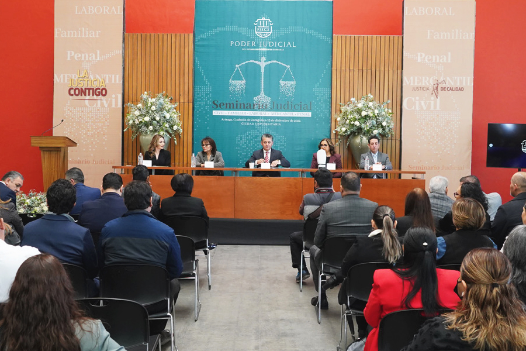
SEMINARIO JUDICIAL
El 13 de diciembre de 2022, se realizó el primer Seminario Judicial orientado a unificar la visión del modelo de justicia y gestión judicial, entre la totalidad de las y los juzgadores de nuestro estado. Se llevaron a cabo conferencias, paneles y mesas de trabajo relativos a la justicia digital y el modelo de gestión en temas como eficiencia administrativa, transparencia, vigilancia judicial, manejo de archivos, derechos humanos e igualdad de género y carrera judicial. En el mismo marco se desarrollaron conversatorios para cada una de las materias: penal, familiar, mercantil, civil y laboral enfocados a unificar criterios jurisdiccionales que den certeza a las y los justiciables.
CAPACITACIÓN EN MEDIOS ALTERNOS DE SOLUCIÓN DE CONTROVERSIAS
En lo que respecta al rubro de justicia alternativa, trabajamos conjuntamente a través del Instituto de Especialización Judicial y del Centro de Medios Alternos de Solución de Controversias (CEMASC) que nos permitió ofrecer un curso completamente autogestivo en el que participaron 333 funcionarias y funcionarios judiciales a través de cápsulas pregrabadas. También impartimos un curso de habilidades para mejorar relaciones y comunidad en el cual se capacitaron a 37 personas. Así mismo llevamos a cabo dos cursos de mediación escolar de manera presencial en donde participaron 43 personas.
En este mismo ámbito, en 2022 concluyeron el Diplomado en Medios de Solución de Controversias en sede judicial un total de 58 funcionarios, entre personal jurisdiccional, administrativo, así como mediadoras y mediadores.
Personal del Centro de Medios Alternos fue invitado en el mes de noviembre a participar como evaluadores en el Tercer Concurso Estatal de Mecanismos Alternativos en Materia Penal, celebrado por la Universidad Americana del Noreste (UANE), dando retroalimentación sobre la forma en que se debe aplicar la mediación y conciliación penal a los alumnos de derecho que participaron en dicho concurso.
CERTIFICACIÓN DE MEDIACIÓN Y CONCILIACIÓN
Los servidores públicos, estatales o municipales y las personas físicas que deseen desempeñarse en los servicios de mediación y conciliación, únicamente pueden realizarlo al contar con la certificación avalada por parte del CEMASC del Poder Judicial del Estado.
Esta certificación consta de tres exámenes: psicométrico, teórico y práctico con la finalidad de demostrar que se cuenta con el perfil, conocimientos y habilidades idóneas para llevar a cabo de manera correcta las mediaciones y conciliaciones como herramientas para que las personas resuelvan sus conflictos de manera autocompositiva.
En 2022 iniciamos los tres procesos ordinarios que marcan los lineamientos de certificación en mediación así como dos extraordinarios para certificación que van desde servidores públicos, estatales o municipales, así como privados, cuyo resultado fue la certificación de 49 personas que acreditaron cada una de las etapas correspondientes.
UNIDAD DE DERECHOS HUMANOS E IGUALDAD DE GÉNERO
La Unidad de Derechos Humanos e Igualdad de Género adscrita a la Secretaría Técnica y de Transparencia, es un órgano impulsor de la política de igualdad y respeto a los derechos humanos tanto al interior de este poder público como con los actores involucrados en la impartición de justicia.
Como parte de sus tareas se encuentra la sensibilización en lo relativo a estos rubros, por lo que este año dirigimos cursos de capacitación en temas como: Perspectiva de Género en Materia Laboral, dirigido al personal de los tribunales laborales; Buenas prácticas en materia de Perspectiva de Género, impartido a personal jurisdiccional del Poder Judicial del Estado de Baja California así como el curso Acciones afirmativas en los poderes judiciales para erradicar la violencia contra la mujer y la exposición Modelo Coahuila; Juzgados Especializados en Violencia Familiar contra la Mujer, a la Universidad Autónoma de Baja California; el curso Acciones y políticas públicas de los poderes judiciales para eliminar la violencia contra la mujer ofrecido a personal del Poder Judicial del Estado de Jalisco.
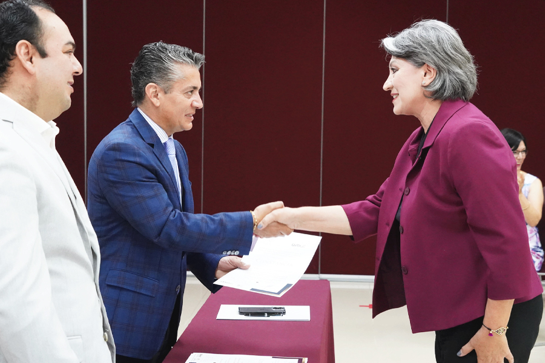
En cumplimiento a otra de sus funciones, a través de esta unidad mantuvimos el constante acercamiento con distintos colectivos de familiares de personas desaparecidas de las que se desprendieron acuerdos que nos permitan ser un puente de comunicación con otras instancias públicas para brindar un acceso integral al sistema de justicia; también, sostuvimos reuniones de trabajo con dependencias encargadas de la vigilancia y protección de los derechos humanos para coordinar esfuerzos institucionales.
Producto de estas reuniones concretamos la firma del Convenio General de Colaboración en Actividades Académicas en materia de Derechos Humanos y su protección con la Academia Interamericana de Derechos Humanos (AIDH).
Asistimos a la Firma de la Norma Técnica Estatal para la Certificación de Sitios Seguros para las Mujeres, en este tema, personal del Poder Judicial recibió dicha certificación lo cual reafirma el compromiso de este poder público en propiciar mejores condiciones para la vida de las mujeres.
Acudimos a la sesión del Sistema Estatal de Acceso de las Mujeres a una vida Libre de Violencia donde se firmó la Alianza para poner fin a la Violencia contra las Mujeres, trabajo coordinado entre la Federación, el Estado, municipios, organismos empresariales y de la sociedad civil así como instituciones educativas. En esta sesión presentamos la implementación del Registro Estatal de Personas Sancionadas por Violencia contra las Mujeres y los resultados obtenidos en los Juzgados Especializados en Violencia Familiar contra la Mujer.
En trabajo colaborativo entre distintas áreas del Poder Judicial, elaboramos el Protocolo para Prevenir, Atender y Sancionar el Hostigamiento y Acoso Sexual o Laboral en el Poder Judicial del Estado de Coahuila, aprobado por el Consejo de la Judicatura. Este instrumento normativo establece las directrices para la atención de las quejas presentadas en los casos de hostigamiento sexual y acoso laboral por parte de servidores públicos adscritos a nuestros órganos, fomentando un clima laboral estable y en armonía.
Establecimos un trabajo coordinado con el Ministerio de Justicia de Canadá a quienes dimos a conocer nuestro Modelo Integral de Prevención, Atención y Sanción de la Violencia contra las Mujeres; derivado de estas reuniones detectamos áreas de oportunidad en materia de acceso de las mujeres a una vida libre de violencia y en ese sentido, integramos un equipo de trabajo multidisciplinario entre el Poder Judicial y el Poder Legislativo, que luego de un análisis jurídico y legislativo concluyó en una iniciativa de reforma al Código Penal del Estado para incorporar al acecho como delito, así como a la Ley de Acceso de las Mujeres a una Vida Libre de Violencia estatal a fin de adicionar entre los tipos de violencia contra las mujeres, la violencia por acecho. Esta iniciativa se encuentra en estudio por parte del Congreso del Estado.
Asistimos al Foro de Acceso a la Justicia para las Mujeres en las instalaciones de la Comisión Nacional para Prevenir y Erradicar la Violencia contra las Mujeres (CONAVIM), a través de mesas de diálogo establecimos acuerdos para generar herramientas que contribuyan a garantizar a las mujeres y niñas una vida libre de violencia.
Colaboramos con el Consejo de la Judicatura Federal y ConJusticia de USAID para llevar a cabo el intercambio de experiencias entre las Unidades de Igualdad de Género de los poderes judiciales locales, sobre las políticas institucionales con perspectiva de género e inclusión social donde participaron 23 entidades.
En el marco de la conmemoración del Día Internacional de la Mujer, asistimos a la Suprema Corte de Justicia de la Nación a la entrega de la Medalla María Cristina Salmorán de Tamayo otorgada al mérito judicial y a juzgar con perspectiva de género interseccional la cual fue recibida en esta ocasión por la jueza Lilia Verónica Sánchez Castillo adscrita al Juzgado de Primera Instancia en Materia Penal del Sistema Acusatorio y Oral de Saltillo.
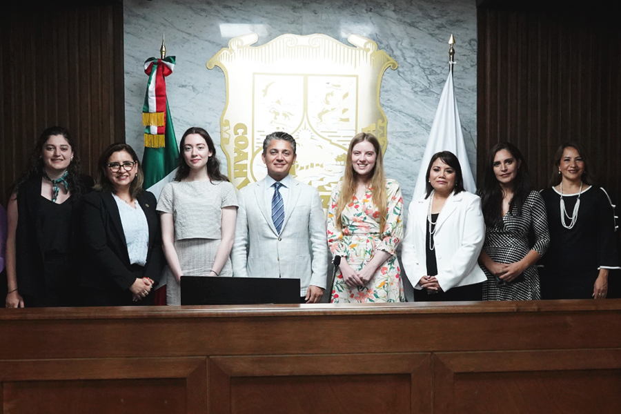
Nuestra entidad fue reconocida por su aplicación de políticas públicas y acciones encaminadas a salvaguardar los derechos humanos y la igualdad de género. Dentro de estas acciones se colaboró con el Instituto Nacional de las Mujeres para llevar a cabo el Foro Órdenes de protección como mecanismo de garantía a la seguridad e integridad de las mujeres, al cual asistieron unidades de derechos humanos e igualdad de género de los poderes judiciales locales así como magistradas y magistrados y personal operador del sistema de justicia.
Con el propósito de sensibilizar y concientizar a nuestro personal, el día 25 de cada mes dedicamos un espacio en nuestras redes sociales a la eliminación de la violencia contra la mujer. Entre las publicaciones que compartimos se encuentran testimonios, avances en las políticas generadas para una vida libre de violencia y el marco normativo en la materia.
Desarrollamos la Campaña #8M a fin de divulgar las herramientas implementadas por el Poder Judicial en el acceso a la justicia a las mujeres coahuilenses. Durante el mes de junio, colocamos la bandera que identifica a la comunidad LGBTI+ en apoyo a su causa de inclusión y no discriminación.
En octubre apoyamos en la lucha contra el cáncer de mama y a través de una campaña invitamos a nuestro personal a portar una prenda rosa y en coordinación con el Sistema DIF Coahuila y la Secretaría de Salud, les facilitamos a nuestras servidoras públicas una Unidad Móvil de Detección, en Monclova, Saltillo y Torreón.
Finalmente, en conmemoración del Día internacional de la Eliminación de la Violencia contra la Mujer dedicamos 16 días de activismo en redes sociales a fin de publicar diariamente las leyes que abonan a la eliminación de esta práctica.
RECURSOS HUMANOS
Mediante la Dirección de Recursos Humanos, área adscrita a la Oficialía Mayor, gestionamos los asuntos relacionados con las personas que laboran en el Poder Judicial y nos apegamos a cubrir las necesidades de personal requerido en las distintas áreas que conforman este poder público.
Este año la plantilla del Poder Judicial del Estado está conformada por mil 804 trabajadores, de los cuales mil 154 son mujeres y 650 hombres, esto es, de la totalidad de plazas ocupadas las mujeres representan el 64 por ciento y los hombres el 36 por ciento del personal.
MOVIMIENTOS DE PERSONAL
En el periodo que se informa realizamos 295 movimientos de personal, con los cuales cubrimos las necesidades de servidoras y servidores públicos adscritos a órganos jurisdiccionales y áreas administrativas, clasificándose de la siguiente manera: 39 movimientos de titulares de juzgados de primera instancia; 42 correspondientes a secretarias y secretarios de acuerdo, 39 de personal actuarial en sus distintas categorías, 10 personas adscritas al Instituto Estatal de Defensoría Pública, 57 hombres y 108 mujeres de personal administrativo sustantivo y de apoyo.
Tabla 32. Movimientos de personal
| Tipo de movimiento | Tipo de designación | Tipo de cargo | Número |
|---|---|---|---|
| Suplencias externas | Definitiva | Judicial y Administrativo | 111 |
| Suplencias externas | Interina sujeta a una temporalidad | Judicial y Administrativo | 14 |
| Suplencias externas | Interinas hasta en tanto se realice el debido procedimiento de selección | Judicial | 12 |
| Promoción | Interina sujeta a una temporalidad | Judicial y Administrativo | 16 |
| Promoción | Interina hasta en tanto se realice el debido procedimiento de selección | Judicial | 45 |
| Reelección | Personal con cargo jurisdiccional | Judicial | 10 |
| Cambio de adscripción | Personal con cargo jurisdiccional | Judicial | 38 |
| Cambio de adscripción | Personal con cargo administrativo | Administrativo | 49 |
Fuente: Dirección de Recursos Humanos de la Oficialía Mayor. Poder Judicial del Estado de Coahuila de Zaragoza. 2022.
REESTRUCTURACIÓN DE ÓRGANOS JURISDICCIONALES, NO JURISDICCIONALES Y ADMINISTRATIVOS
Realizamos una redistribución de personal de distintas áreas administrativas a fin de asignarlo a la función jurisdiccional para aprovechar de forma eficiente sus perfiles, habilidades, conocimientos y competencias.
Actualmente, nuestro personal está distribuido 87 por ciento (mil 564 personas) a áreas jurisdiccionales, mientras que 13 por ciento (240 personas) a áreas administrativas.
CREACIÓN DE ÓRGANOS
Para cumplir con las necesidades de los tiempos actuales en cuanto a la cobertura en las materias especializadas según la exigibilidad judicial, este año aprobamos la creación del juzgado especializado en materia ambiental para determinar la responsabilidad así como la reparación de daños ocasionados al ambiente. Para este propósito fue designada una persona juzgadora de primera instancia en materia civil a cubrir esta responsabilidad.
Por otro lado, con la incorporación de materia laboral como competencia del Poder Judicial, dimos lugar a la creación de los seis nuevos Tribunales Laborales, quienes iniciaron operaciones a partir del 3 de octubre del presente año, autorizando las plazas de personal requeridas para su funcionamiento, selección derivada del proceso de exámenes de méritos correspondiente, lo que nos permite contar al día de hoy con 13 nuevos jueces y juezas en esta materia.
BENEFICIOS AL PERSONAL
Con el fin de ofrecer al personal del Poder Judicial apoyos a favor de su economía familiar y la administración de sus ingresos, trasladamos la nómina a una sola institución bancaria que ofrece beneficios como seguro de vida, asistencia funeraria, retribuciones monetarias, así como asesorías legal, dental, médica y psicológica.
Además, continuamos con la prestación de contratar un seguro de gastos médicos mayores o de seguro de vida con un precio preferencial a efecto de que los servidores judiciales y sus familias tengan acceso a este tipo de servicios a un bajo costo, facilitando el pago de estos seguros mediante descuento quincenal en su nómina.
Seguimos con el otorgamiento de préstamos personales con un interés bajo y descuento mediante nómina en beneficio de las y los servidores públicos del Poder Judicial. Con esta política de fortalecimiento de la economía de nuestro personal este año se autorizaron 272 préstamos por un monto de ocho millones 613 mil 948 pesos.